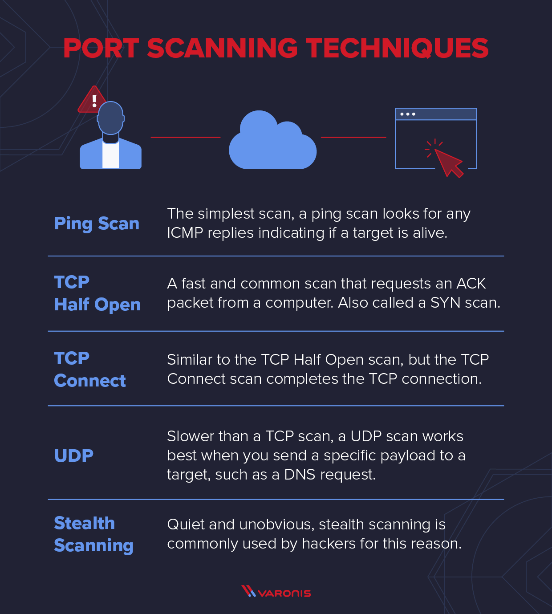
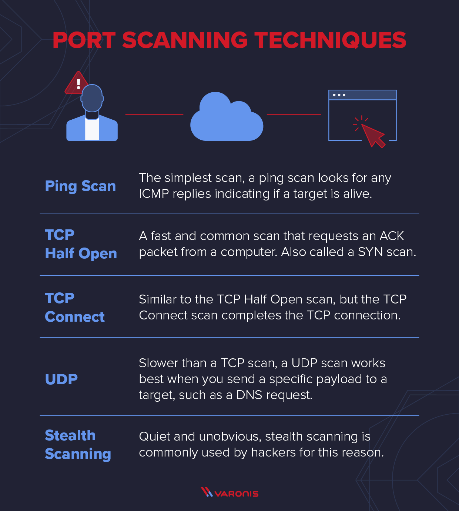

How to do portscanning
Set up a regular port scanning plan to make sure that all network devices are constantly inspected for open ports and any security vulnerabilities.
Put in place continuous monitoring systems that can instantly identify and notify you of any suspicious port scanning activity. Create incident response protocols so that possible security events may be quickly investigated and addressed.
Expand the scope of your port scanning efforts to include outside partners and vendors that have access to your network or offer essential services to your company's operations, because a vulnerability in their systems could breach your systems as well.
Port scanning attacks
Port scanning is frequently used by attackers as a prelude to attack launches. Attackers can find possible access points into a system by detecting open ports. For instance, an open port that is often used for remote access might be a sign of a vulnerability that could be leveraged to obtain unauthorised access. Furthermore, knowing the services that are using those ports enables attackers to customise their assaults to take advantage of known security holes in certain apps.
Port scanning is a crucial component of network security monitoring from a defensive standpoint. Security experts frequently examine their own networks using port scanning tools in an effort to find unexpected or unauthorised services that could point to a security breech. Organisations may identify such risks and take proactive steps to neutralise them before they develop into full-fledged assaults by keeping an eye out for strange port behaviour.
benefits and drawbacks
Port scanning may be done using a variety of methods and instruments, each having unique benefits and drawbacks. TCP connect scanning, SYN scanning, UDP scanning, and stealth scanning are a few popular port scanning methods. Every method works differently, asking target computers to respond by using distinct flags and packet types. Furthermore, port scans can be carried out for both innocent and malicious purposes, thus it's critical for cybersecurity experts to comprehend the context and intent of port scanning operations on their networks. In the end, efficient port scanning is essential to both offensive and defensive cybersecurity operations because it enables businesses to find and fix possible weaknesses before bad actors can take advantage of them.
 
